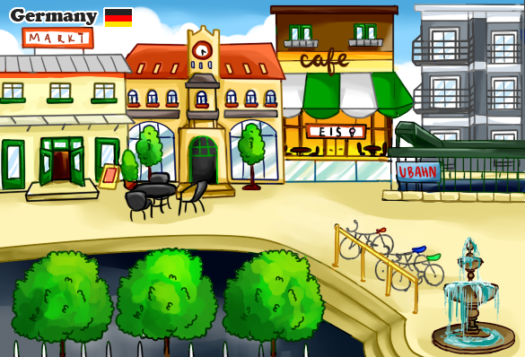

pocket adventure: cultural immersiona greenfoot java gamemy take on how technology may facilitate cross-cultural empathy. all graphics designed and created myself! |
 click to view code |
|
In highschool, for my IB computer science course, I was asked to come up with *some* sort of program for our final assessment. I was (and still am) extremely excited about learning German, so I came up with a game to facilitate learning for other students. Unlike software that teaches pure language acquisition, my game would be geared towards teaching cultural differences. A player might come away knowing a thing or two about the education system and one's lifestyle in another country. I settled on a design that would be kid friendly. In my school district, we don't have a steady foreign language program for kids K-7; in eighth grade, our middle school offered Spanish, and it was mandatory. In high school, I was fortunate to attend the only school in our district with a German program. Other options were Spanish, French, and Latin. By the time students get to eighth grade and beyond, because foreign language has been sidelined by their schools for their whole lives, they may see it as unimportant. Learning a language is a gateway to a culture, to friendships. I know that I am more compassionate because I learned German. I am hoping that we can teach students, early on, to be curious about other cultures, and to be compassionate in a diverse society. I am hoping that a game like this might pique a kid's interest, pulling on intrinsic motivation to explore in a new world. Even if they don't have a language program in their school, they might find this game through the internet, and then they'd be able to learn through it. I also took into account the possibility that an educator might want to use this game in the classroom. So later on in this page there's a GIF concerning customization. Please read my paper, linked on the projects page, (which is somewhat ancient) if you'd like to see the design behind my code, and some code snippets! Below I have some sketches and gifs of my game in action.
initial world designI drew my inspiration from pictures on the internet of German streets, as well as information I learned in my classes. I made this game before I went to Germany for the first time, so I was just trying my best :")
conversation featureThe player can interact with in-game humans to cycle through a conversation! The human on the right side has blank lines, serving as a placeholder. 

market feature (incentive)Through interacting with humans in the world, the player can acquire points (which are displayed in the bottom left corner of the game). These points can be spent at the market, which is accessible through approaching the market building. 
purchasing the goodsthe player wins by collecting all food items! 
customizing the game (a feature for educators)As I am merely an enthusiastic student and not any authority on the language, I wanted to make the game customizeable for educators. If they wanted to use this in their classroom, they'd be able to change some lines through a text editor quite easily. 
new line!
This game, in this version, is merely a prototype. Possible improvements are noted in my paper (linked in projects), but I believe that any *final* version of such a game would require much, much more work and research, as well as consulting many language educators. Teaching culture & language is a huge responsibility, and I do not by any means want to give the impression that I am taking this lightly through its format as a game. |